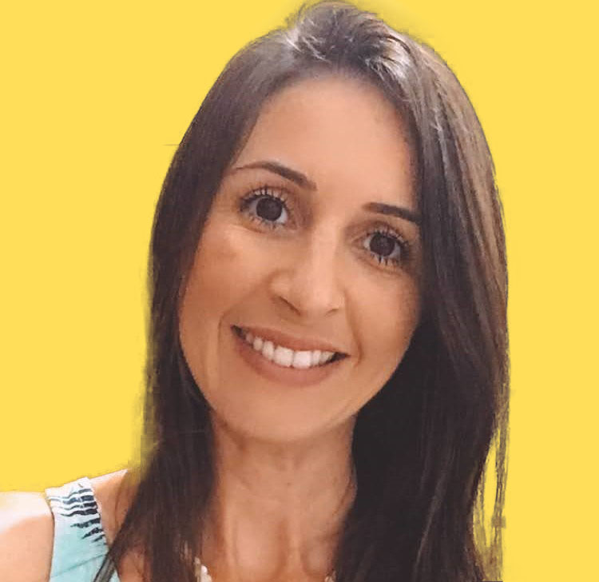

Meu nome é Ellen, tenho 32 anos, sou de Palhoça/SC, atualmente estou morando em Sydney na Austrália para estudar inglês, conhecer novas culturas e viver experiências que me tiram da zona de conforto.
Sou formada em Design pela Universidade Federal de Santa Catarina desde 2015. Em 2013 fiz intercâmbio de cinco meses na Universidade de Vigo, na Espanha, onde pude conhecer e conviver com pessoas de todos os lugares do mundo, pude me envolver e vivenciar suas culturas.
Desde que me formei na graduação, trabalhei como Designer de Interiores, atuei por quase seis anos na área, sempre contribuindo para poder proporcionar as melhores experiências para os clientes.
No momento estou em transição de carreira, aperfeiçoando e adquirindo mais conhecimentos em UX/UI Design, e também estou cursando programação de jogos e sites, focado no mercado de trabalho em TI.
Atualmente sou uma profissional autônoma, atuando com Gestão de Mídias Sociais e Projetos de Interiores até que eu consiga uma recolocação no mercado de trabalho.